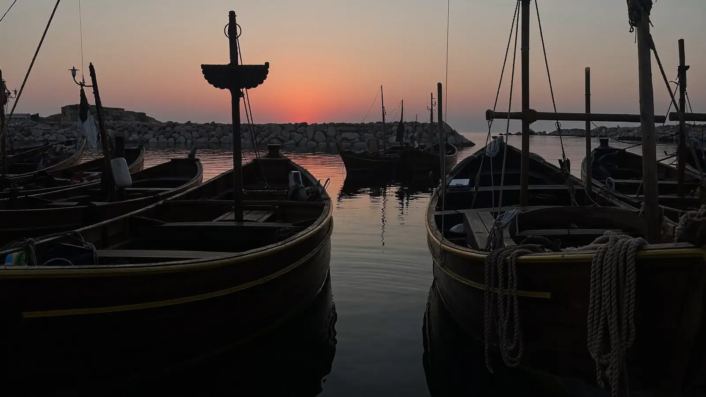
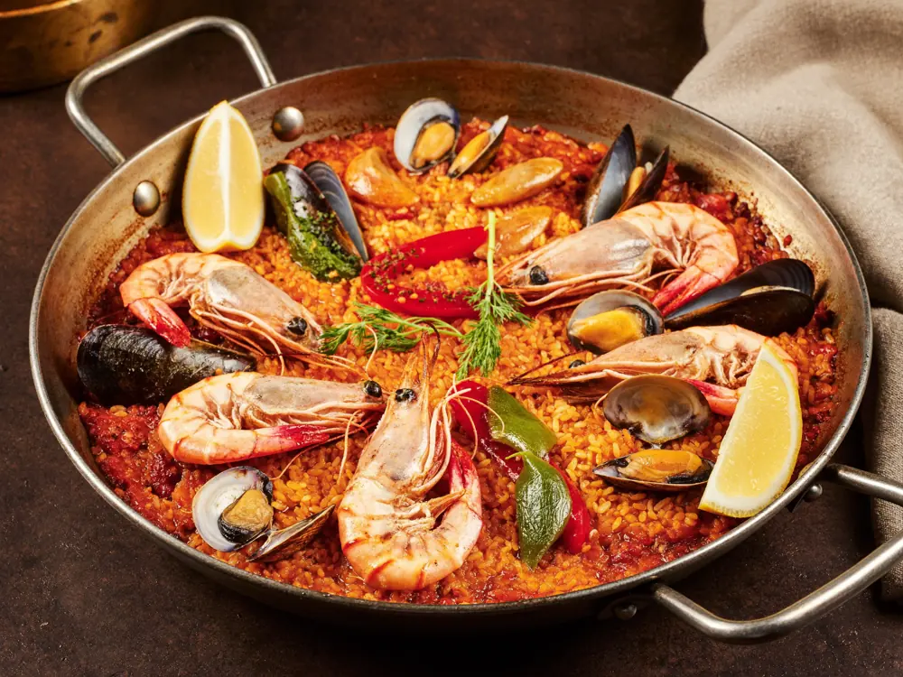
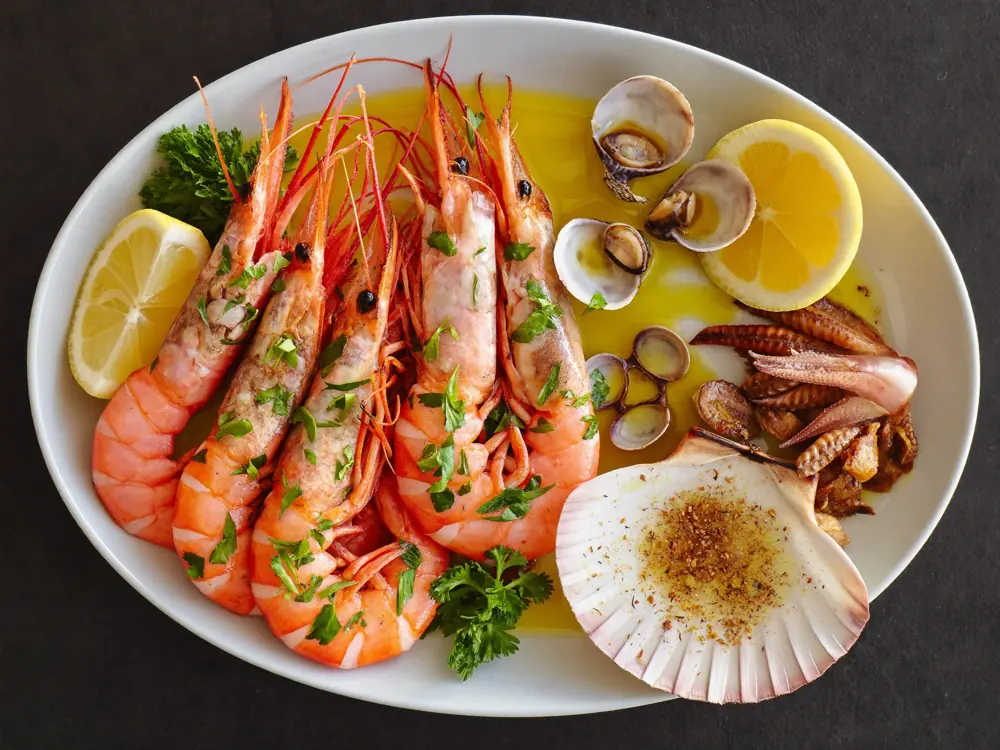
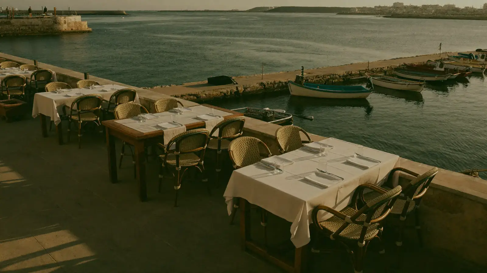

Port de la Clota · L'Escala
En el puerto de la Clota. Arroces marineros y producto del mar, con mil doscientas cincuenta opiniones detrás.

La casa
La Clota está en el Carrer Port de la Clota, en el puerto pesquero de L'Escala. Cocina mediterránea, con el arroz marinero como plato de la casa.
Es de las casas con el rango de precio más alto del pueblo — de 20 a 60 € por persona, confirmado por 247 personas. Eso no es casual: es una cocina de producto. Y el puerto aparece nombrado en 20 opiniones distintas: aquí la ubicación es parte del plato.
Cocina
El plato de la casa. La paella se nombra en 75 opiniones distintas — más que ninguna otra cosa.
El entrante de pescado de la casa, marcado como plato popular en Google.
Producto del puerto de al lado, servido al momento.
De los que aparecen una y otra vez en las fotos de los clientes.


Lo que dicen
Un restaurante acogedor, donde la acogida está a la altura de la calidad de los platos. Los sabores son deliciosos y la experiencia deja una excelente impresión.
Los números

Cómo llegar
En el Port de la Clota. En sala, para recoger y a domicilio.
Llamar ahora Abrir en MapsPreguntas frecuentes
En el Carrer Port de la Clota, en el puerto de L'Escala. El código Plus es 448X+RV.
De 20 a 60 € por persona, según lo que se pida. Lo han confirmado 247 personas en Google.
La paella marinera. Se nombra en 75 opiniones, muy por delante de cualquier otra cosa.
Sí, y aparece nombrada en 16 opiniones.
Las dos cosas, además del servicio en sala.